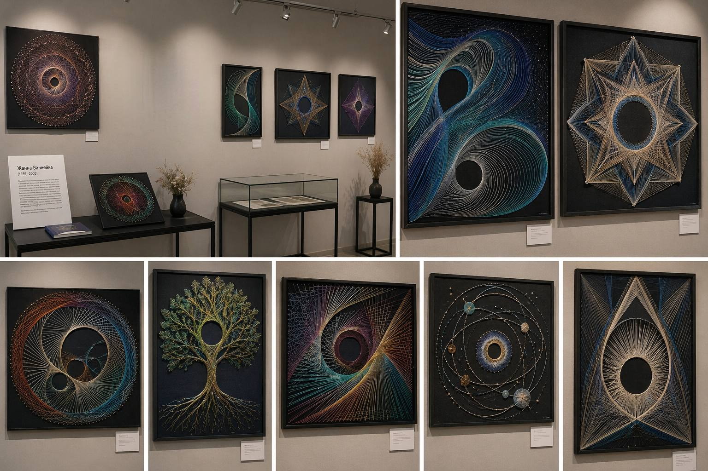
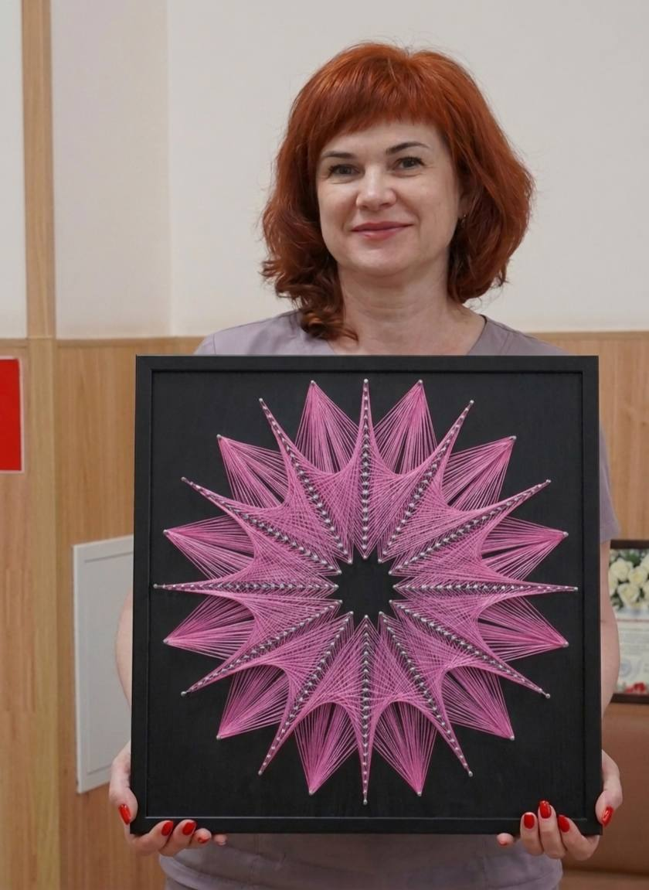
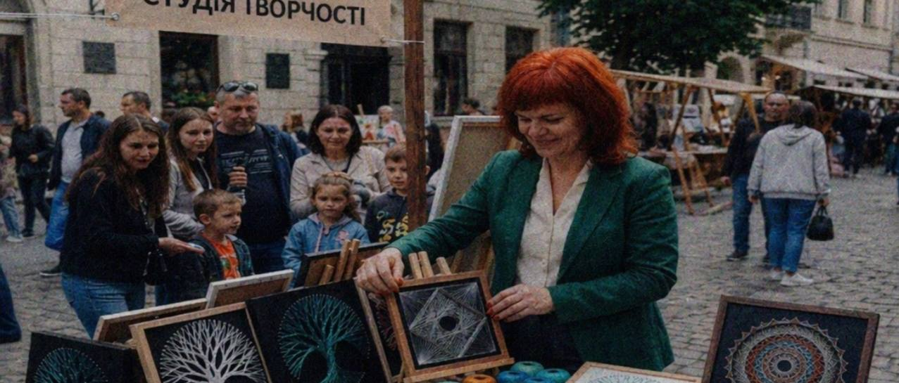

1939 — 2003
Геометрія, що оживає в нитках
Жанна Ваннейка — польсько-українська майстриня, яка перетворила традиційну техніку ниткографії на високе абстрактне мистецтво. Її роботи — це математична точність, поєднана з художньою інтуїцією.
Основними мотивами її творчості були природні явища, космічні образи та символічні композиції, що передавали ідеї гармонії та безкінечності. Вона часто зверталася до теми взаємозв’язку людини і світу.
Нитки різної товщини, дерево, цвяхи
Геометрична абстракція, космізм


